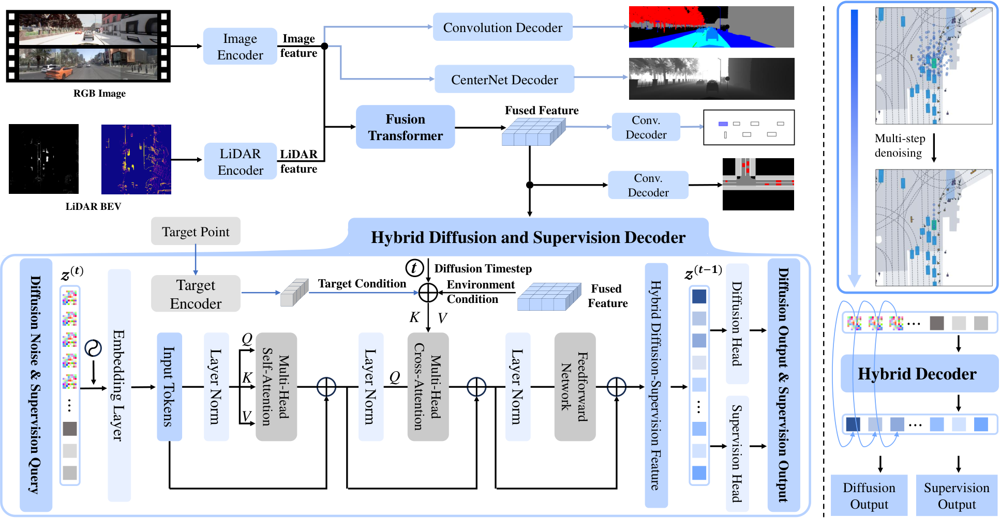

Summary
DiffE2E 提出一种混合 action diffusion 与监督策略的端到端驾驶框架，核心是把 diffusion 去噪与监督任务放在同一个 Transformer decoder 里联合执行：将带噪轨迹 token 与若干监督 query token 拼接后共享 self-attention / cross-attention，再按位置切分为扩散分支与监督分支，使生成式建模与判别式监督在同一 latent 空间中互相约束。模型直接预测干净轨迹 而非噪声，配合 100 步前向扩散与 2 步 DDIM 反去噪，在保持单次前向可实时（42.8 ms）的前提下建模多模态轨迹分布。感知部分采用两阶段训练：Stage 1 多任务预训练（语义分割、深度、BEV 分割、3D 检测），Stage 2 冻结感知、训练扩散 decoder。在 CARLA Longest6 上取得 DS 83 / RC 96 / IS 0.86，Town05 Long 90.8 / 100 / 0.91，NAVSIM navtest PDMS 92.7（人类 94.8），均为同期公开结果中的领先水平。
Problem & Motivation
- 端到端驾驶的输出天然是多模态的（同一场景存在多条合理轨迹），但主流方法要么回归单条轨迹（平滑但过度保守、丢失多模态），要么用离散 anchor / vocabulary 量化轨迹空间（受 anchor 设计限制）。
- Diffusion policy 能建模连续多模态分布，但直接把 diffusion 接到驾驶 planner 上有两个现实问题：采样步数多导致推理慢；纯生成目标缺乏任务级语义约束，学到的分布未必对齐驾驶需求（安全性、舒适性、进度）。
- 已有的混合方案多是”外挂”式：先训练一个监督模型，再在其上接 diffusion head，或在 loss 层面简单加权，两支之间存在表示割裂。
- 作者的主张是：让 diffusion 与监督任务共享同一个 decoder 的 token 序列与注意力计算，监督信号就能直接塑造扩散分支的 latent，而扩散分支的多模态性也能反过来正则监督分支。
- 另一动机是效率：如果去噪只在极少数步内完成（2 步），diffusion 就能进入实时闭环，而不只是开环 benchmark 上的离线技巧。
Method
0. 总体框架
输入为多视角图像（CARLA 另加 LiDAR）与 ego state（速度、加速度）、导航 command。感知 backbone 输出 BEV 特征，经全局条件编码后送入混合 decoder。Decoder 的输入序列由两部分拼成：长度为 的带噪轨迹 token，以及长度为 的监督 query token。两者在同一个 Transformer block 内做 self-attention，再与全局条件做 cross-attention，最后按索引切分为扩散输出与监督输出。
1. 全局条件编码
导航 command、goal point、diffusion timestep 分别嵌入后与场景特征拼接，并加位置编码：
其中 为 BEV 场景 token， 把 goal 坐标映射为 token， 是扩散步 的 sinusoidal embedding。diffusion timestep 因此成为全局条件的一部分，同一套 decoder 权重在不同噪声水平下复用。
2. 混合输入序列
把带噪轨迹 编码为 个 token， 是可学习的监督 query（ 个）。位置编码让 decoder 能通过索引区分两支，而不需要额外的 modality embedding。
3. 共享注意力与按位切分
这是全文最关键的设计：监督 token 与轨迹 token 在 self-attention 中互相可见，因此监督任务的梯度会通过注意力直接改写轨迹 token 的表示；反过来，轨迹 token 携带的几何/时序信息也会进入监督分支。切分只是读出时的索引操作，不引入额外参数。
4. 直接预测 的扩散目标
前向过程为标准 VP diffusion，共 步，噪声 schedule 采用 Square Cosine。与常见做法（预测噪声 ）不同，decoder 直接回归干净轨迹：
预测 的好处是训练目标与最终评价指标（轨迹误差）同构，且 2 步 DDIM 反去噪时可以直接从预测的 重参数化出 ，误差不会在噪声空间里被放大。消融显示改为噪声预测会让 DS 从 82.9 崩到 20.1。
5. 监督分支与总损失
监督任务随 benchmark 变化。CARLA 上是 4 类速度分类（braking / walking speed / slow / fast），用类别加权交叉熵抵消长尾：
NAVSIM 上是 agent detection，损失为存在性 focal loss 加 bbox smooth L1。总目标为
CARLA 上 ，NAVSIM 上扩散损失权重取 10.0（即监督项相对权重 0.1）。
6. 两阶段训练
Stage 1 用感知多任务损失（语义分割、深度、BEV 分割、3D 检测）预训练 backbone；Stage 2 冻结感知参数，只训练扩散 decoder 与监督分支。这样做的理由是感知标签与规划标签的量级和梯度尺度差异大，联合训练会破坏感知特征。需要注意，Appendix A 的损失描述又写成感知与规划联合优化，与正文的”冻结”表述存在矛盾。
7. 实现细节
| 项目 | CARLA | NAVSIM |
|---|---|---|
| 感知 backbone | TransFuser + RegNetY-3.2GF | VovNetV2-99 |
| 输入 | camera + LiDAR | camera + LiDAR（C&L） |
| 训练数据 | 750k frames（TF++ MPC expert） | navtrain |
| 训练轮数 | 每阶段 30 epochs | 100 epochs |
| batch size | Stage 1 = 16，Stage 2 = 256 | 64 |
| 学习率 | ||
| 轨迹 horizon | 10 | 8 |
| 扩散步数 | 前向 100，DDIM 2 步 | 同左 |
| 噪声 schedule | Square Cosine | 同左 |
| loss 权重 | 扩散 10.0 / 监督 1.0 | |
| 监督任务 | 4 类速度分类 | agent detection（30 boxes） |
| 硬件 | 4 × RTX 3090 | 4 × RTX 3090 |
Pipeline

- 多视角图像与 LiDAR 经感知 backbone 编码为 BEV 特征 。
- ego state、导航 command、goal point 与扩散步 embedding 拼成全局条件 。
- 带噪轨迹编码为 个 token，与 个监督 query 拼接，加位置编码得到 。
- 送入共享的 Transformer decoder：self-attention 让两支交互，cross-attention 注入场景与条件。
- 按索引切分：前 个 token 经轨迹头输出 ，后 个 token 经任务头输出监督预测。
- 推理时从纯噪声出发做 2 步 DDIM，每步都用 重参数化，最终输出一条轨迹。
Key Results
1) CARLA Longest6（Table 1）
| Method | DS ↑ | RC ↑ | IS ↑ |
|---|---|---|---|
| WOR | 21 | 48 | 0.56 |
| LAV v1 | 33 | 70 | 0.51 |
| Interfuser | 47 | 74 | 0.63 |
| TransFuser | 47 | 93 | 0.50 |
| TCP | 48 | 72 | 0.65 |
| LAV v2 | 58 | 83 | 0.68 |
| Perception PlanT | 58 | 88 | 0.65 |
| DriveAdapter | 59 | 82 | 0.68 |
| ThinkTwice | 67 | 77 | 0.84 |
| TransFuser++ | 69 | 94 | 0.72 |
| DriveAdapter + TCP | 71 | 88 | 0.85 |
| TransFuser++ (WP) | 73 | 97 | 0.56 |
| DiffE2E | 83 | 96 | 0.86 |
- DS 比最强的 TransFuser++ (WP) 高 10 点，比 DriveAdapter + TCP 高 12 点。RC 略低于 TF++ (WP) 的 97，说明提升主要来自”该走的时候敢走”而非”更少违规”。
- IS 0.86 是表中最高的之一，与 ThinkTwice 的 0.84 接近，说明多模态生成没有牺牲单条输出的平滑性。
2) NAVSIM navtest（Table 2）
| Method | PDMS ↑ | NC ↑ | DAC ↑ | EP ↑ | TTC ↑ | C ↑ |
|---|---|---|---|---|---|---|
| Human | 94.8 | 100 | 100 | 87.5 | 100 | 99.9 |
| AD-MLP | 65.6 | 93.0 | 77.3 | 62.8 | 83.6 | 100 |
| VADv2 | 80.9 | 97.2 | 89.1 | 76.0 | 91.6 | 100 |
| UniAD | 83.4 | 97.8 | 91.9 | 78.8 | 92.9 | 100 |
| LTF | 83.8 | 97.4 | 92.8 | 79.0 | 92.4 | 100 |
| PARA-Drive | 84.0 | 97.9 | 92.4 | 79.3 | 93.0 | 99.8 |
| TransFuser | 84.0 | 97.7 | 92.8 | 79.2 | 92.8 | 100 |
| LAW | 84.6 | 96.4 | 95.4 | 81.7 | 88.7 | 99.9 |
| DRAMA | 85.5 | 98.0 | 93.1 | 80.1 | 94.8 | 100 |
| Hydra-MDP | 86.5 | 98.3 | 96.0 | 78.7 | 94.6 | 100 |
| DiffusionDrive | 88.1 | 98.2 | 96.2 | 82.2 | 94.7 | 100 |
| GoalFlow | 90.3 | 98.4 | 98.3 | 85.0 | 94.6 | 100 |
| Hydra-MDP++ | 91.0 | 98.6 | 98.6 | 85.7 | 95.1 | 100 |
| DiffE2E | 92.7 | 99.9 | 98.6 | 85.3 | 99.3 | 99.9 |
- PDMS 92.7 超过 Hydra-MDP++ 的 91.0，距人类 94.8 还差 2.1 点。
- NC 99.9 与 TTC 99.3 是表中最高的两项，说明安全类指标提升明显；DAC 98.6 与 EP 85.3 与 Hydra-MDP++ 基本持平，说明增益不在”是否沿路走”而在”是否避免碰撞”。
- Consistency 99.9 略低于多数方法的 100，是唯一没有拿满的指标。
3) 消融（Table 3，CARLA）
| Variant | DS ↑ | RC ↑ | IS ↑ |
|---|---|---|---|
| Base（two-stage, pred） | 82.9 | 96.2 | 0.86 |
| w/o ego state | 68.9 | 88.8 | 0.81 |
| w/o command | 69.6 | 93.8 | 0.77 |
| w/o GRU | 66.8 | 75.5 | 0.88 |
| Full Diffusion（纯扩散，无监督） | 70.1 | 91.1 | 0.76 |
| Full Discrimination（纯监督，无扩散） | 70.3 | 83.5 | 0.86 |
| One-stage training | 18.2 | 21.8 | 0.79 |
| Two-stage training | 82.9 | 96.2 | 0.86 |
| Noise prediction | 20.1 | 27.2 | 0.72 |
| Trajectory reconstruction（） | 82.9 | 96.2 | 0.86 |
- 混合结构本身贡献最大：拆成纯扩散或纯监督都掉到 ~70 DS，说明增益来自两支共享注意力，而非任一单支。
- 去掉 GRU 掉 16 DS，是单项里影响最大的组件，但 GRU 只在消融中出现，Method 正文没有描述其位置与作用。
- 去掉 ego state 掉 14 DS，说明模型对自车运动状态高度依赖；去掉 command 掉 13 DS。
- one-stage 训练直接崩到 18.2，作者归因于感知与规划梯度的尺度冲突；但这也意味着”端到端联合优化”实际上并未实现。
- 噪声预测 vs 预测是 20.1 vs 82.9 的量级差，是全文最强的单项证据。
4) CARLA Town05（Table 6 / Table 7）
| Town05 Long | DS ↑ | RC ↑ | IS ↑ |
|---|---|---|---|
| CILRS | 7.8 | 10.3 | 0.75 |
| LBC | 12.3 | 31.9 | 0.66 |
| Roach | 41.6 | 96.4 | 0.43 |
| ST-P3 | 11.5 | 83.2 | – |
| VAD | 30.3 | 75.2 | – |
| MILE | 61.1 | 97.4 | 0.63 |
| DriveMLM | 76.1 | 98.1 | 0.78 |
| VADv2 | 85.1 | 98.4 | 0.87 |
| DiffE2E | 90.8 | 100 | 0.91 |
| Town05 Short | DS ↑ | RC ↑ |
|---|---|---|
| CILRS | 7.5 | 13.4 |
| LBC | 31.0 | 55.0 |
| TransFuser | 54.5 | 78.4 |
| ST-P3 | 55.1 | 86.7 |
| NEAT | 58.7 | 77.3 |
| Roach | 65.3 | 88.2 |
| WOR | 64.8 | 87.5 |
| VAD | 64.3 | 87.3 |
| VADv2 | 89.7 | 93.0 |
| Interfuser | 95.0 | 95.2 |
| DiffE2E | 95.2 | 99.7 |
- Long 上 RC 达到 100，是表中唯一无违规的方法；DS 90.8 比 VADv2 高 5.7。
- Short 上 DS 95.2 仅比 Interfuser 高 0.2，但 RC 99.7 明显更高，说明 Short 已接近饱和，区分度主要看 RC。
5) 推理开销（Table 8）
| Method | Latency (ms) ↓ | Params | Backbone |
|---|---|---|---|
| TransFuser | 29.1 | 55M | ResNet-34 |
| DiffusionDrive | 39.1 | 60M | ResNet-34 |
| GoalFlow | 66.8 | 190M | V2-99 |
| DiffE2E | 42.8 | 105M | V2-99 |
- 42.8 ms 与 DiffusionDrive 的 39.1 ms 同量级，远低于 GoalFlow 的 66.8 ms；参数量 105M 大于 DiffusionDrive，但 backbone 更强（V2-99 vs ResNet-34），比较不完全同条件。
- 需要注意 §D.2 正文写的是 60M 参数，与 Table 8 的 105M 相差近一倍，论文内部未对齐。
Critical reading
- Table 2 的对比混合了输入模态：DiffE2E 与 GoalFlow、DiffusionDrive 用 camera + LiDAR，Hydra-MDP++ 只用 camera。表注未区分，PDMS 的领先幅度因此不能直接归因于方法。
- 92.7 仍低于人类 94.8，且 NAVSIM 是非反应式开环 benchmark，log replay 下其他 agent 不会对自车行为作出反应，安全类指标的结论外推有限。
- 闭环证据只有 CARLA Longest6 与 Town05，均为单次运行，未报告种子方差或置信区间；DS 83 与 82.9 的差异在 CARLA 常见波动范围内。
- 两阶段训练实际上是”冻结感知 + 训练规划”，并非端到端联合优化。§4.1 与 §B.1.1 明确写 freeze，§A.1 的损失描述又写联合训练，两处矛盾。
- Table 4 把 batch size 标为 one-stage 256 / two-stage 16，而 §B.1.1 正文写 Stage 1 = 16、Stage 2 = 256，方向相反。
- Table 8 的 105M 与 §D.2 正文的 60M 不一致。
- GRU 是消融中影响最大的组件（去掉掉 16 DS），但 Method 完全没有描述它的位置、输入与作用，读者无法复现。
- 只用 2 步 DDIM 且只输出单条轨迹，因此”建模多模态分布”的能力没有被验证：没有报告采样多样性、mode coverage 或多轨迹选择策略。这一点与 DiffusionDrive 的 truncated diffusion + mode selection 形成对照。
- 混合监督的任务在两个 benchmark 上不同（CARLA 是速度分类，NAVSIM 是 agent detection），消融只在 CARLA 做，无法判断监督任务类型对 NAVSIM 结果的影响。
- 没有敏感性分析：CARLA 固定 1.0，NAVSIM 固定 0.1，为什么是这个量级、换一个值会怎样，均未讨论。
- 去噪步数消融用”以 92.705 为零基线、1e4 缩放”的方式呈现，没有给原始 DS 值，可读性差。
- “first” claim 的限定是”直接生成轨迹 + 在 CARLA 闭环中验证”，与 DiffusionDrive 的差异需要更精确的界定，否则容易被读成首次将 diffusion 用于端到端驾驶。
- 论文未给出代码链接，复现性存疑。
Strengths & Weaknesses
Strengths
- 混合 decoder 的设计很轻：不引入额外网络分支，只靠 token 拼接与按索引切分就实现了扩散与监督的表示共享，工程上容易落地。
- 直接预测 的选择被消融强力支持（82.9 vs 20.1），且与 2 步 DDIM 配合使 diffusion 首次进入实时区间（42.8 ms）。
- 在 CARLA 与 NAVSIM 两个差异很大的 benchmark 上都取得领先，且安全类指标（NC、TTC）提升最明显，说明监督分支确实在约束生成分布。
- 消融设计较完整：拆两支、拆训练阶段、拆预测目标、拆输入条件，四个维度都给了数字。
Weaknesses
- 两阶段训练消解了”端到端”的核心卖点，one-stage 崩溃（18.2）说明感知与规划的联合优化问题并未解决，只是被绕开。
- 多模态性只在训练目标层面存在，推理时单条输出，没有任何多样性或 mode selection 的证据。
- 关键组件 GRU 未在 Method 中描述，复现性差。
- 多处内部数字与设定不一致（105M vs 60M、batch size 方向、freeze vs joint），审稿层面的严谨性不足。
- 缺少 camera-only 版本，无法与纯视觉方法在同等输入下比较。
- 未开源。
Notes
论文定位
把 diffusion policy 从”离线生成多条候选 + 后处理选择”的范式，改为”与监督任务共享 decoder 的单次前向生成”，并用 预测 + 2 步 DDIM 把延迟压到实时区间。它真正提出的问题不是”diffusion 能不能用于驾驶”（已有 DiffusionDrive 等工作），而是”diffusion 与判别式监督能不能在同一个 latent 里互相约束”。答案是能，且增益主要来自安全类指标。
可迁移点
- 混合 token 序列 + 按索引切分是一个通用 pattern：任何”生成式头 + 判别式头”需要共享表示的场景都可以用，不需要改网络结构，只需要约定 token 顺序。可迁移到 VLA 的 action head 与语言头共享、或世界模型的 latent 与 reward 头共享。
- 直接预测 而非噪声在低步数采样下优势巨大。这个结论值得在别的 diffusion policy 上复核：是不是所有实时 diffusion 都应该改成 预测，还是只在 很小、schedule 特殊时成立。
- 监督任务的选择可以按 benchmark 的失败模式定制（CARLA 的速度控制是主要失败源，NAVSIM 的碰撞是主要失败源），这种”用监督分支补生成分支短板”的思路比统一加一个大 loss 更精准。
待跟进
- 混合 decoder 中监督 token 与轨迹 token 的注意力权重分布：监督梯度究竟通过哪几层、以多大比例改写轨迹表示，论文没有可视化，这是理解”为什么 work”的关键缺口。
- 2 步 DDIM 下的实际分布覆盖：需要采样多次并统计 mode 数量与碰撞率，才能判断”多模态”是真实的还是仅存在于训练目标中。
- one-stage 训练崩溃的根因：是梯度尺度、学习率调度还是感知标签噪声，论文只给了现象。若能解决，才真正回到端到端。
- GRU 的作用与位置：从消融看它是除混合结构外最重要的组件，但完全缺席 Method 描述，需要看代码或后续版本来确认。
- 与 DiffusionDrive 的 truncated diffusion 在”低步数 + 单输出”设定下的直接对比：两者都压缩了采样步数，但一个靠截断、一个靠 预测，孰优需要同 backbone 同数据对比。